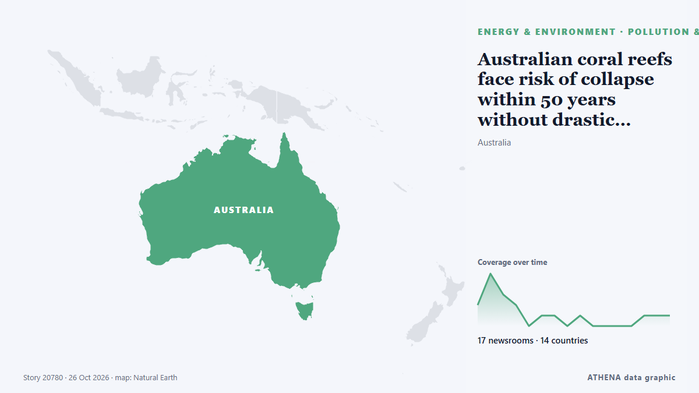

Australian coral reefs face risk of collapse within 50 years without drastic action, global assessment finds

Every shallow-water coral reef ecosystem in Australia faces an extremely high risk of collapse by 2075, driven largely by projected ocean warming, according to a global assessment. из Phys.org
Независимые источники: 17 изданий в 14 странах, с 22 окт.; первым сообщил Times of India; освещение идёт на спад. ATHENA оценивает риск как низкий (1.8/10), прежде всего из-за тяжести описываемого ущерба и географического и отраслевого охвата. Уверенность — 88 % (высокая); подтверждают независимые источники: 17 изданий, средняя надёжность источников — 74 %. СМИ по странам: Соединенные Штаты (3), Индия (2), Великобритания (2). Освещение: с 22 окт. по 26 окт., 95 ч.
Почему это важно: События в энергетике и сырьевой сфере влияют на цены топлива и электроэнергии, надёжность поставок и климатические обязательства.
Что изменилось: 3 новых сообщений от 3 редакций за 24 часа до 26 окт..
Первый заголовок: Nearly all coral reefs risk collapse in 50 years: IUCN
Заголовки приводятся на английском языке, как они были опубликованы.
Коротко в цифрах
Отобрано, оценено и написано по опубликованной методологии ATHENA. Ни один редактор не вмешивается в отдельные события. Как это создаётся ›
| 22 Oct 05:30 UTC | 2 |
|---|---|
| 22 Oct 11:30 UTC | 5 |
| 22 Oct 17:30 UTC | 3 |
| 22 Oct 23:30 UTC | 2 |
| 23 Oct 05:30 UTC | 0 |
| 23 Oct 11:30 UTC | 1 |
| 23 Oct 17:30 UTC | 1 |
| 23 Oct 23:30 UTC | 0 |
| 24 Oct 05:30 UTC | 1 |
| 24 Oct 11:30 UTC | 0 |
| 24 Oct 17:30 UTC | 0 |
| 24 Oct 23:30 UTC | 0 |
| 25 Oct 05:30 UTC | 0 |
| 25 Oct 11:30 UTC | 1 |
| 25 Oct 17:30 UTC | 1 |
| 25 Oct 23:30 UTC | 1 |
| 22 Oct 12:11 UTC | 0.9 |
|---|---|
| 22 Oct 19:56 UTC | 1.7 |
| 26 Oct 04:36 UTC | 1.8 |
Откуда эти цифры
Значимость
Риск
Уверенность
Освещение — кто сообщил и когда
заголовок в оригинале · открывает источник- Times of India · ИндияMaldives begins planting coral on 2 submerged planes to build artificial reef
- RFI English · ФранцияNearly all coral reefs at risk of collapse by 2075, conservation body warns
- Al-Monitor · Соединенные ШтатыNearly all coral reefs risk collapse in 50 years: IUCN
- The Guardian · ВеликобританияAlmost every shallow-water coral reef on the planet faces ecosystem collapse by 2075, UN advisors say
- The Straits Times · СингапурNearly all coral reefs risk collapse in 50 years: IUCN
- Times of India · ИндияMarine life on the brink? 96% of coral reefs could face collapse by 2075
- Arab News · Саудовская АравияNearly all coral reefs risk collapse in 50 years: IUCN
- Hespress English · МароккоNearly all coral reefs risk collapse in 50 years: IUCN
- DW English · Германия96% of world's coral reefs face critical risk of collapse, IUCN warns
- The Korea Times · Республика КореяAlmost all coral reef ecosystems face risk of collapse in 50 years, study warns
- Al Jazeera English · КатарAlmost all shallow-water coral reefs now face extinction risk, study warns
- Jamaica Observer · ЯмайкаNearly all coral reefs risk collapse in 50 years, IUCN warns
- Mongabay · Соединенные ШтатыNearly all the world’s coral reefs are at risk of collapse within 50 years, IUCN warns
- Inside Climate News · Соединенные ШтатыMost of the World’s Shallow Coral Reefs Could Collapse in the Next 50 Years
- Türkiye Today · ТурцияWarming oceans put most shallow coral reefs on borrowed time
- Oman Observer · ОманCampaign to protect coral reefs
- Phys.org · ВеликобританияAustralian coral reefs face risk of collapse within 50 years without drastic action, global assessment finds
- China Daily — page reader · КитайNearly half of reef-building corals face extinction risk: study